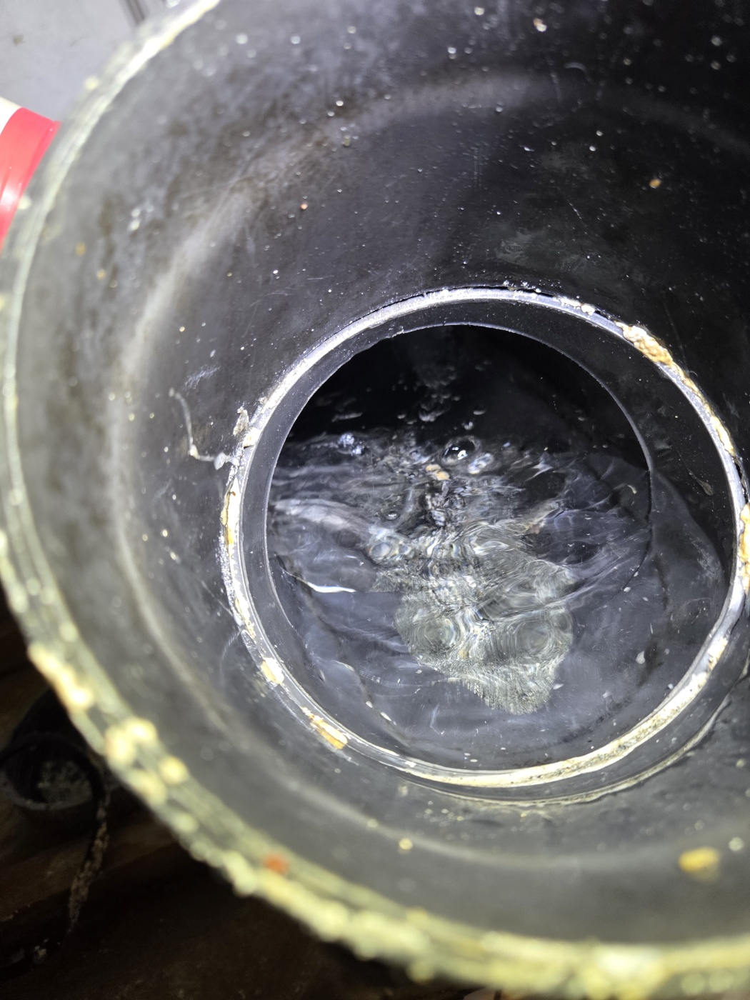
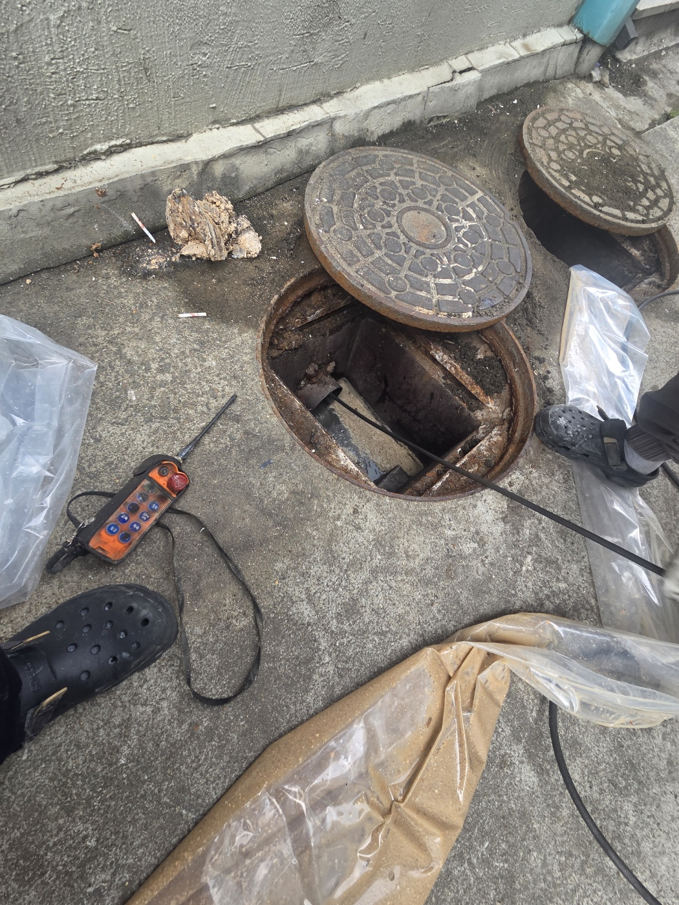
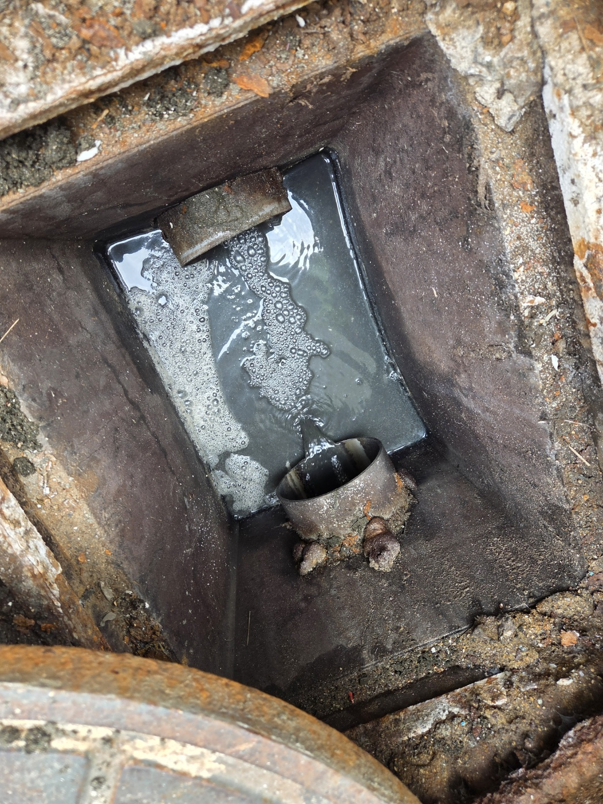
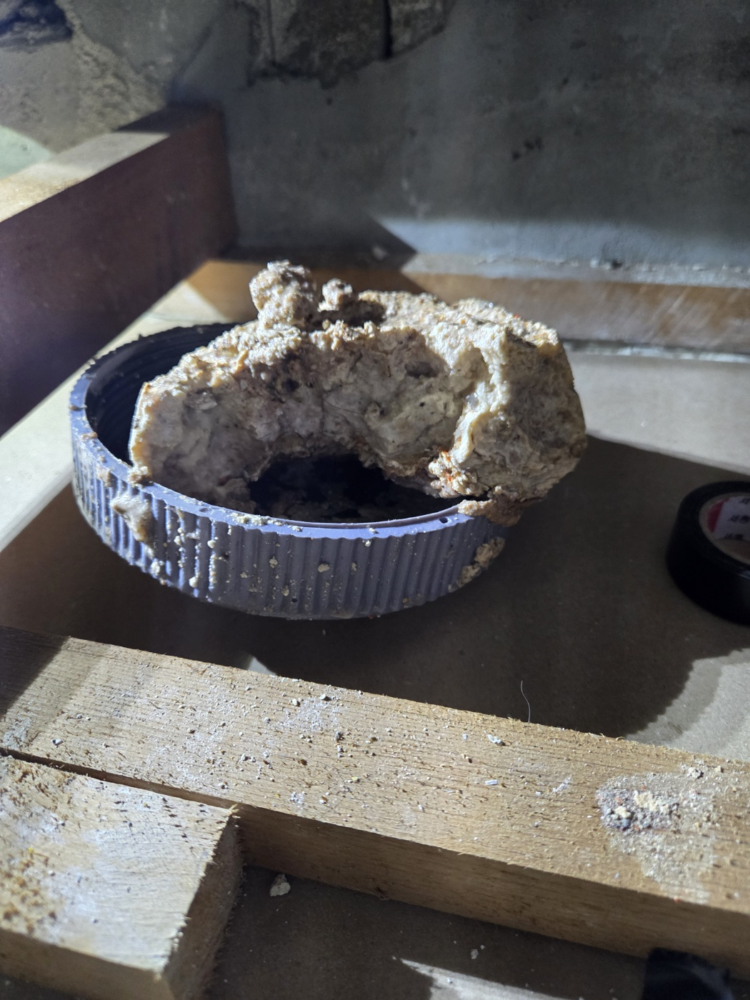
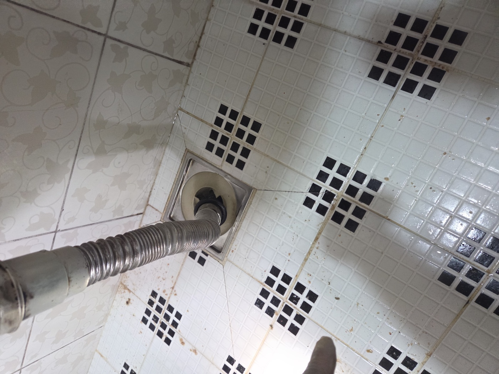
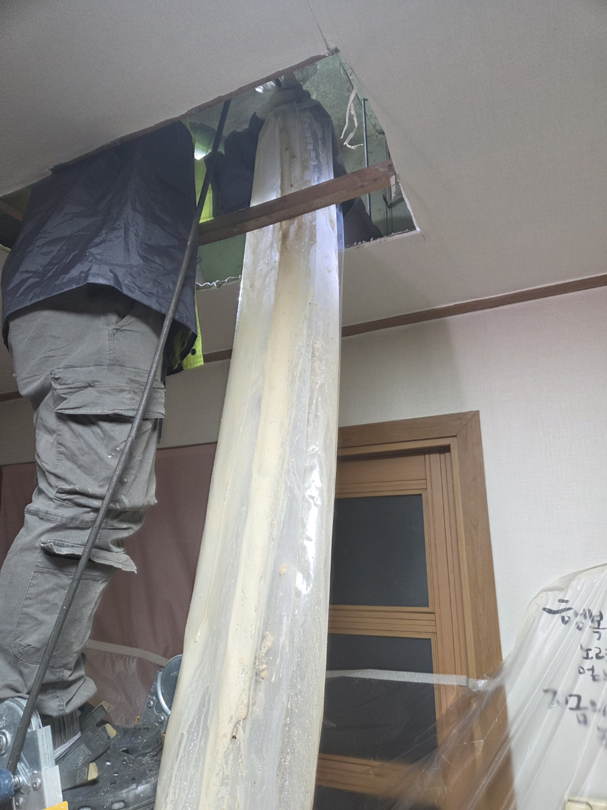
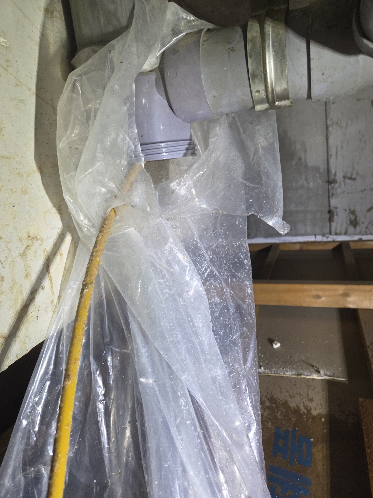
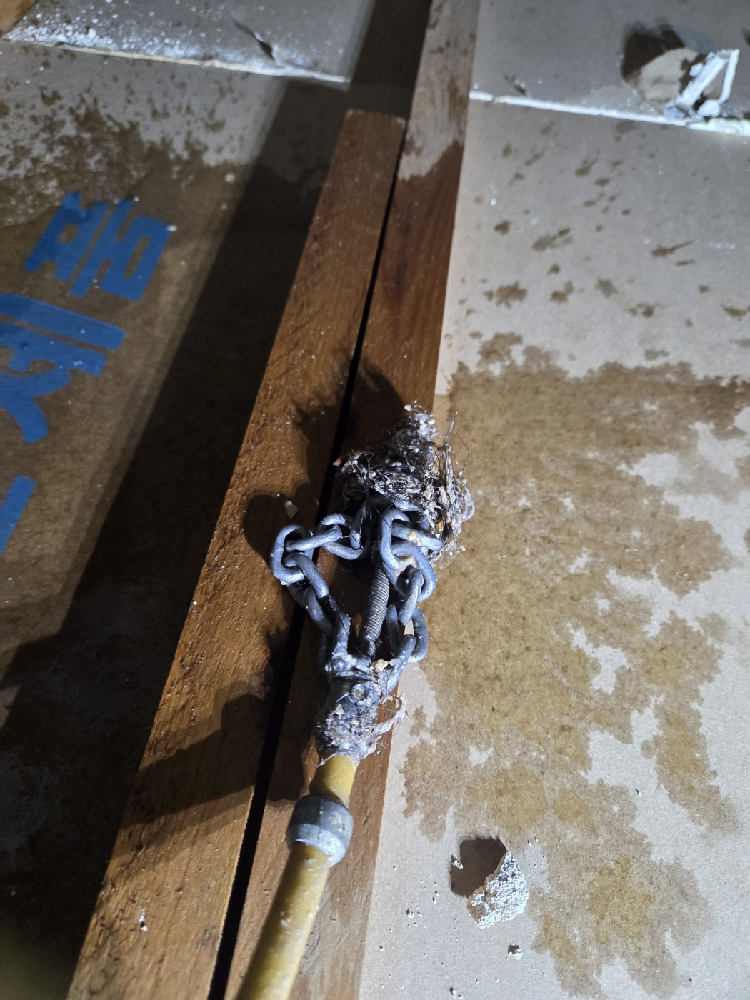
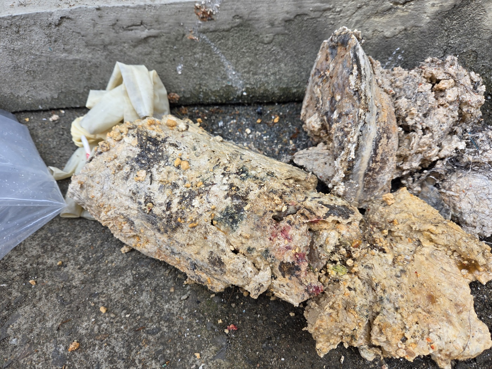
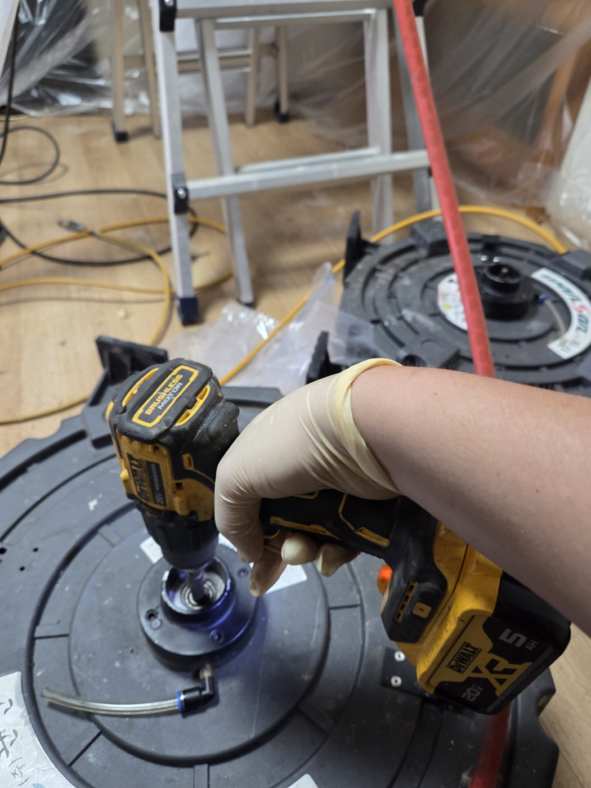

안녕하세요.. 고고고 설비입니다.. 오늘은 천안시 두정동에 있는 다세대주택에서 하수구막힘 신고를 받고 다녀온 현장입니다. 여러 세대가 함께 쓰는 건물이라 특정 세대만의 문제가 아니라 건물 전체 배관을 살펴봐야 했어요.
건물 앞 맨홀부터 열어서 배관 연결부 상태를 확인했습니다. 맨홀이 두 곳이라 각각 열어서 어느 구간이 막혔는지 하나씩 짚어나갔어요.

맨홀 안쪽 트렌치를 보니 물이 고여서 잘 안 빠지고 있었습니다. 여러 세대의 하수가 한곳으로 모이는 구간이라 이물질도 그만큼 많이 쌓여있었어요.

전동 샤프트 장비를 세팅하고 케이블을 배관 안쪽으로 밀어 넣을 준비를 했습니다.

건물 내부 욕실 바닥 배수구에도 호스를 넣어 안쪽 상태를 함께 확인했습니다. 외부 맨홀과 실내 배수구를 같이 봐야 정확한 원인을 찾을 수 있었어요.

건물 구조상 윗세대 배관이 아래층 천장을 지나고 있어서, 천장 점검구를 열고 사다리에 올라가 배관 상태까지 확인했습니다. 다세대주택은 이렇게 천장 배관까지 봐야 하는 경우가 종종 있어요.

확인을 마친 배관 연결부는 비닐로 감싸서 마무리 보양까지 해드렸습니다.

전동 샤프트 케이블을 빼보니 머리카락과 섬유질이 엉겨 붙어 체인에까지 뭉쳐있었습니다. 오랫동안 쌓인 게 한눈에 보일 정도였어요.


제거된 이물질을 한곳에 모아 확인해보니, 여러 세대의 하수가 섞여 쌓인 만큼 양이 상당했습니다. 작업을 마치고 물을 내려서 모든 구간이 정상적으로 배수되는 걸 최종 확인했어요.

다세대주택은 여러 세대의 하수가 한 배관으로 모이는 구조라, 한 세대만 관리를 잘해도 다른 세대 영향을 받을 수 있습니다. 건물 전체 맨홀과 배관을 주기적으로 점검해주시는 게 막힘 재발을 줄이는 데 도움이 됩니다.
고고고 설비는 주택, 아파트, 원룸, 상가, 공장의 생활 하수 오수 배관을 관리해 주는 업체입니다. 고고고 설비에 전화 주시면 친절상담 정확한 진단 확실한 해결로 보답해 드리겠습니다!!